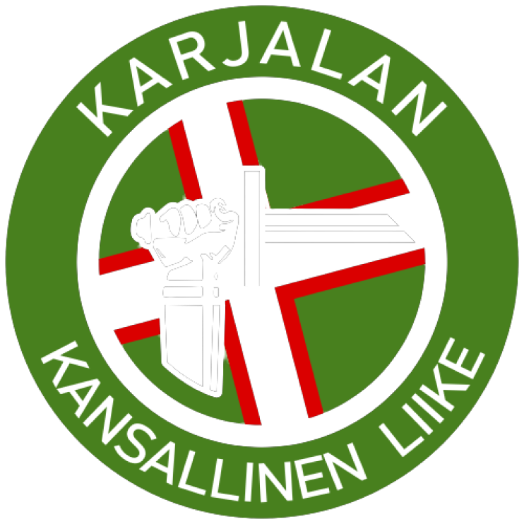

Василий Леонтьевич Левонен (Vaseli Levonen), известный как Укки Вяйнямёйнен (Ukki Väinämöinen), был лидером карельского повстанческого движения начала XX века, который встал на путь борьбы против большевизма.
Его самоотверженность, решимость и преданность Родине позволили ему возглавить Карельское Восстание. Он был лидером лесных партизан (metsäsissit), главой повстанческих сил и непримиримым антикоммунистом – олицетворением архетипа из Калевалы.
Сражаясь с красной армией в неравном бою, Василий Левонен с остатками непокоренного народа ушел в Финляндию, где прожил долгую жизнь, сохраняя народные Традиции карельской земли.
